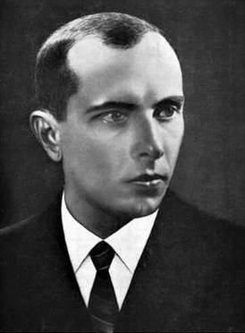

Степа́н Андре́евич Банде́ра (укр. Степан Андрійович Бандера; 1 января 1909, Старый Угринов, Королевство Галиции и Лодомерии, Австро-Венгрия — 15 октября 1959, Мюнхен, ФРГ) — украинский политический деятель, лидер и организатор украинского националистического движения на Западной Украине. Работая в подполье, был известен под псевдонимами Баба, Лис, Степанко, Малый, Серый, Рых, Матвей Гордон, Крук и др.
Родился в семье грекокатолического священника. Член Украинской войсковой организации (с 1928 года) и Организации украинских националистов (ОУН) (с 1929 года), краевой проводник ОУН на западноукраинских землях (с 1933 года), организатор ряда террористических актов. В 1934 году был арестован польскими властями и приговорён судом к смертной казни, которую позднее заменили на пожизненное заключение. В 1936−1939 годах отбывал наказание в польских тюрьмах, свободу получил в сентябре 1939 года благодаря нападению Германии на Польшу. Некоторое время находился в подполье на советской территории, после чего перешёл на территорию, оккупированную немецкими войсками. В феврале 1940 года инициировал раскол ОУН и сформировал Революционный провод — руководящий орган фракции ОУН(б) (бандеровского движения), опиравшийся на украинских националистов, действовавших в подполье на территории западных областей Украинской ССР. В 1940 — первой половине 1941 года организовал подготовку вооружённого националистического подполья к восстанию и войне против СССР совместно с нацистской Германией. После нападения Германии на СССР вместе с другими деятелями украинского националистического движения был арестован германскими властями за несанкционированную попытку провозглашения самостоятельного украинского государства и помещён под домашний арест, а позднее (в начале 1942 года) отправлен в концлагерь Заксенхаузен, откуда был выпущен руководством нацистской Германии в сентябре 1944 года. В 1947 году возглавил Провод ОУН. В августе 1952 года в связи с разногласиями с руководством краевого провода ОУН оставил этот пост. В 1946—1953 и 1956—1959 гг. возглавлял Провод зарубежных частей ОУН. В 1959 году был убит агентом КГБ СССР Богданом Сташинским.
Точки зрения на личность Степана Бандеры крайне полярны1. Политические идеи и деятельность Бандеры, Шухевича и других деятелей украинского националистического подполья 1930-х — 1950-х в наши дни стали предметом подражания для современных украинских националистических организаций, которые используют их как основу для воспитания своих сторонников. В свою очередь, жители Юго-Восточной Украины, а также Польши, Белоруссии и России относятся к нему в основном негативно, обвиняя в радикальном национализме, терроризме и коллаборационизме. Понятие «бандеровцы», производное от его фамилии, в СССР постепенно стало нарицательным и применялось ко всем украинским националистам, независимо от их отношения к Бандере.
